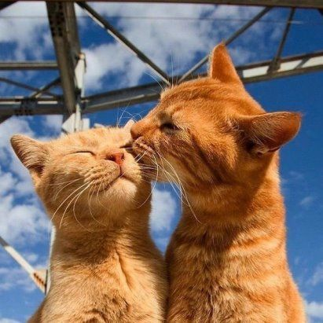

Алисе наскучило сидеть с сестрой без дела на берегу реки; разок-другой она заглянула в
книжку, которую читала сестра, но там не было ни картинок, ни разговоров.
- Что толку в книжке, - подумала Алиса, - если в ней нет ни картинок, ни разговоров?
Она сидела и размышляла, не встать ли ей и не нарвать ли цветов для венка; мысли ее текли медленно и
несвязно - от жары ее клонило в сон. Конечно, сплести венок было бы очень приятно, но стоит ли ради этого
подыматься?
Вдруг мимо пробежал белый кролик с красными глазами.
Конечно, ничего удивительного в этом не было. Правда, Кролик на бегу говорил:
- Ах, боже мой, боже мой! Я опаздываю.
Но и это не показалось Алисе особенно странным. (Вспоминая об этом позже, она подумала, что ей следовало
бы
удивиться, однако в тот миг все казалось ей вполне естественным.)
Но, когда Кролик вдруг вынул часы из
жилетного кармана и, взглянув на них, помчался дальше, Алиса вскочила на ноги. Ее тут осенило: ведь
никогда
раньше она не видела кролика с часами, да еще с жилетным карманом в придачу!
Сгорая от любопытства, она
побежала за ним по полю и только-только успела заметить, что он юркнул в нору под изгородью.
В тот же миг Алиса юркнула за ним следом, не думая о том, как же она будет выбираться
обратно.
Нора сначала шла прямо, ровная, как туннель, а потом вдруг круто обрывалась вниз. Не успела Алиса и
глазом моргнуть, как она начала падать, словно в глубокий колодец.

То ли колодец был очень глубок, то ли падала она очень медленно, только времени у нее было достаточно, чтобы
прийти в себя и подумать, что же будет дальше. Сначала она попыталась разглядеть, что ждет ее внизу, но там
было темно, и она ничего не увидела. Тогда она принялась смотреть по сторонам. Стены колодца были уставлены
шкафами и книжными полками; кое-где висели на гвоздиках картины и карты. Пролетая мимо одной из полок, она
прихватила с нее банку с вареньем. На банке было написано «АПЕЛЬСИНОВОЕ», но увы! она оказалась пустой.
Алиса побоялась бросить банку вниз - как бы не убить кого-нибудь! На лету она умудрилась засунуть ее в
какой-то шкаф.
- Вот это упала, так упала! - подумала Алиса. - Упасть с лестницы теперь для меня пара пустяков. А наши
решат, что я ужасно смелая. Да свались я хоть с крыши, я бы и то не пикнула.
lesson 6
Вполне возможно, что так оно и было бы.
А она все падала и падала. Неужели этому не будет конца?
- Интересно, сколько миль я уже пролетела? - сказала Алиса вслух. - Я, верно, приближаюсь к центру земли.
Дайте-ка вспомнить... Это, кажется, около четырех тысяч миль вниз...
Видишь ли, Алиса выучила кое-что в этом роде на уроках в классной, и, хоть сейчас был не самый подходящий
момент демонстрировать свои познания - никто ведь ее не слышал, - она не могла удержаться.
- Да так, верно, оно и есть, - продолжала Алиса. - Но интересно, на какой же я тогда широте и долготе?
.jpg)
.jpg)
Сказать по правде, она понятия не имела о том, что такое широта и долгота, но ей очень
нравились эти слова. Они звучали так важно и внушительно!
Помолчав, она начала снова:
- А не пролечу ли я всю землю насквозь? Вот будет смешно! Вылезаю - а люди вниз головой! Как их там
зовут?..
Антипатии, кажется...
В глубине души она порадовалась, что в этот миг ее никто не слышит, потому что слово это звучало как-то
не
так.
- Придется мне у них спросить, как называется их страна. «Простите, сударыня, где я? В Австралии или в
Новой
Зеландии?»
И она попробовала сделать реверанс. Можешь себе представить реверанс в воздухе во время падения? Как,
по-твоему, тебе бы удалось его сделать?
- А она, конечно, подумает, что я страшная, невежда! Нет, не буду никого спрашивать! Может, увижу
где-нибудь
надпись! А она все падала и падала. Делать нечего - помолчав, Алиса снова заговорила.
- Дина будет меня сегодня весь вечер искать. Ей без меня так скучно!
Диной звали их кошку.
- Надеюсь, они не забудут в полдник налить ей молочка... Ах, Дина, милая, как жаль, что тебя со мной нет.
Правда, мышек в воздухе нет, но зато мошек хоть отбавляй! Интересно, едят ли кошки мошек?
Тут Алиса почувствовала, что глаза у нее слипаются. Она сонно бормотала:
- Едят ли кошки мошек? Едят ли кошки мошек?
Иногда у нее получалось:
- Едят ли мошки кошек?
Алиса не знала ответа ни на первый, ни на второй вопрос, и потому ей было все равно, как
их
ни задать. Она чувствовала, что засыпает. Ей уже снилось, что она идет об руку с Диной и озабоченно
спрашивает ее:
- Признайся, Дина, ты когда-нибудь ела мошек?
Тут раздался страшный треск. Алиса упала на кучу валежника и сухих листьев.
Она ничуть не ушиблась и быстро вскочила на ноги. Взглянула наверх - там было темно. Перед ней тянулся
другой коридор, а в конце его мелькнул Белый Кролик. Нельзя было терять ни минуты, и Алиса помчалась за
ним
следом. Она слышала, как, исчезая за поворотом, Кролик произнес:
- Ах, мои усики! Ах, мои ушки! Как я опаздываю!
Повернув за угол, Алиса ожидала тут же увидеть Кролика, но его нигде не было. А она очутилась в длинном
низком зале, освещенном рядом ламп, свисавших с потолка.
Дверей в зале было множество, но все оказались заперты. Алиса попробовала открыть их - сначала с одной
стороны, потом с другой, но, убедившись, что ни одна не поддается, она прошла по залу, с грустью
соображая,
как ей отсюда выбраться.
Вдруг она увидела стеклянный столик на трех ножках. На нем не было ничего, кроме крошечного золотого
ключика. Алиса решила, что это ключ от одной из дверей, но увы! - то ли замочные скважины были слишком
велики, то ли ключик слишком мал, только он не подошел ни к одной, как она ни старалась. Пройдясь но залу
во
второй раз, Алиса увидела занавеску, которую не заметила раньше, а за ней оказалась маленькая дверца
дюймов
в пятнадцать вышиной. Алиса вставила ключик в замочную скважину - и, к величайшей ее радости, он подошел!
Она открыла дверцу и увидела за ней нору, совсем узкую, не шире крысиной. Алиса встала
на
колени и заглянула в нее - в глубине виднелся сад удивительной красоты. Ах, как ей захотелось выбраться
из
темного зала и побродить между яркими цветочными клумбами и прохладными фонтанами! Но она не могла
просунуть
в нору даже голову.
- Если б моя голова и прошла, - подумала бедная Алиса, - что толку! Кому нужна голова без плечей? Ах,
почему
я не складываюсь, как подзорная труба! Если б я только знала, с чего начать, я бы, наверно, сумела.
Видишь ли, в тот день столько было всяких удивительных происшествий, что ничто не казалось ей теперь
совсем
не возможным.
Сидеть у маленькой дверцы не было никакого смысла, и Алиса вернулась к стеклянному столику, смутно
надеясь
найти на нем другой ключ или на худой конец руководство к складыванию наподобие подзорной трубы. Однако
на
этот раз на столе оказался пузырек.
- Я совершенно уверена, что раньше его здесь не было! - сказала про себя Алиса.
К горлышку пузырька была привязана бумажка, а на бумажке крупными красивыми буквами было написано: «ВЫПЕЙ
МЕНЯ!»
Это, конечно, было очень мило, но умненькая Алиса совсем не торопилась следовать совету.
- Прежде всего надо убедиться, что на этом пузырьке нигде нет пометки: « Яд! » - сказала она.
Видишь ли, она начиталась всяких прелестных историй о том, как дети сгорали живьем или попадали на
съедение
диким зверям, - и все эти неприятности происходили с ними потому, что они не желали соблюдать простейших
правил, которым обучали их друзья: если слишком долго держать в руках раскаленную докрасна кочергу, в
конце
концов обожжешься; если поглубже полоснуть по пальцу ножом, из пальца обычно идет кровь; если разом
осушить
пузырек с пометкой «Яд!», рано или поздно почти наверняка почувствуешь недомогание. Последнее правило
Алиса
помнила твердо.
Однако на этом пузырьке никаких пометок не было, и Алиса рискнула отпить из него немного. Напиток был очень
приятен на вкус - он чем-то напоминал вишневый пирог с кремом, ананас, жареную индейку, сливочную помадку и
горячие гренки с маслом. Алиса выпила его до конца.
- Какое странное ощущение! - воскликнула Алиса. - Я, верно, складываюсь, как подзорная труба.
И не ошиблась - в ней сейчас было всего десять дюймов росту. Она подумала, что теперь легко пройдет сквозь
дверцу в чудесный сад, и очень обрадовалась. Но сначала на всякий случай она немножко подождала - ей
хотелось убедиться, что больше она не уменьшается. Это ее слегка тревожило.
- Если я и дальше буду так уменьшаться, - сказала она про себя, - я могу я вовсе исчезнуть. Сгорю как
свечка! Интересно, какая я тогда буду?
И она постаралась представить себе, как выглядит пламя свечи после того, как свеча потухнет. Насколько ей
помнилось, такого она никогда не видала.
Подождав немного и убедившись, что больше ничего не происходит, она решила тотчас же выйти в сад. Бедняжка!
Подойдя к дверце, она обнаружила, что забыла золотой ключик на столе, а вернувшись к столу, поняла, что ей
теперь до него не дотянуться. Сквозь стекло она ясно видела снизу лежащий на
столе ключик.
Она попыталась
взобраться на стол по стеклянной ножке, но ножка была очень скользкая. Устав от напрасных усилий, бедная
Алиса села на пол и заплакала.
- Ну, хватит! - строго приказала она себе немного спустя. - Слезами горю не поможешь. Советую тебе сию же
минуту перестать!
Она всегда давала себе хорошие советы, хоть следовала им нечасто. Порой же
ругала себя так беспощадно, что
глаза ее наполнялись слезами. А однажды она даже попыталась отшлепать себя по щекам за то, что схитрила,
играя в одиночку партию в крокет. Эта глупышка очень любила притворяться двумя разными девочками
сразу.
- Но сейчас это при всем желании невозможно! - подумала бедная Алиса. - Меня и на одну-то едва-едва хватает!
Тут она увидела под столом маленькую стеклянную коробочку. Алиса открыла ее - внутри был пирожок, на котором
коринками было красиво написано: «СЪЕШЬ МЕНЯ!»
- Что ж, - сказала Алиса, - я так и сделаю. Если при этом я вырасту, я достану ключик, а если уменьшусь -
пролезу под дверь. Мне бы только попасть в сад, а как - все равно!